기계조립산업기사 (2010-03-07 기출문제)
1과목: 기계가공법 및 안전관리
1. 밀링에서 상향절삭과 비교한 하향절삭 작업의 장점에 대한 설명이다. 틀린 것은?
- 표면거칠기가 좋다.
- 공구의 수명이 길다.
- 가공물 고정이 유리하다.
- 백 래시를 제거하지 않아도 된다.
(정답률: 80%)

2. 수기가공에서 수나사를 가공하는 공구는?
- 탭
- 리머
- 다이스
- 스크레이퍼
(정답률: 73%)
3. 보조 프로그램 호출 시 사용되는 보조기능은?
- M 00
- M01
- M 98
- M 99
(정답률: 74%)
4. 다음 중 금속 귀환장치가 있는 기계는?
- 셰이퍼
- 지그보링머신
- 밀링
- 호빙머신
(정답률: 74%)
5. 보링 머신에서 가공이 가능한 방법이 아닌 것은?
- 드릴링
- 리밍
- 태핑
- 그라인딩
(정답률: 71%)
6. 센터리스 연삭기에 대한 설명이다. 잘못 설명한 것은?
- 가공물을 연속적으로 가공하기가 곤란하다.
- 연삭 깊이는 거친 연삭의 경우 0.2mm 정도이다.
- 일반적으로 조정 숫돌은 연삭축에 대하여 경사시켜 가공한다.
- 가늘고 긴 공작물을 센터나 척으로 지지하지 않고 가공한다.
(정답률: 50%)
7. 밀링 절삭작업에서 떨림(chattering)이 생기는 이유가 아닌 것은?
- 공작물의 길이가 짧을 때
- 바이트의 날끝이 불량할 때
- 절삭속도가 부적당할 때
- 공작물의 고정이 불량할 때
(정답률: 93%)
8. 주철과 같이 매짐이 있는 재료를 저속으로 절삭할 때 발생되는 일반적인 칩의 형태는?
- 전단형
- 경작형
- 균열형
- 유동형
(정답률: 69%)
9. 브로칭머신의 절삭공구인 브로치의 구조에 해당되지 않는 것은?
- 자루부
- 절삭부
- 안내부
- 경사부
(정답률: 40%)
10. 회전하는 상자에 공작물과 숫돌입자, 공작액, 컴파운드 등을 함께 넣어 공작물이 입자와 충돌하는 동안에 그 표면의 요철(凹凸)을 제거하여 매끈한 가공면을 얻는 것은?
- 숏피닝
- 수퍼피니싱
- 버니싱
- 배럴가공
(정답률: 80%)
11. 각도 측정기인 오토 콜리메이터(auto-collimator)의 주요 부속품에 해당하지 않는 것은?
- 폴리건 프리즘
- 변압기
- 펜터 프리즘
- 접촉식 프로브
(정답률: 48%)
12. 드라이버 사용 시 유의사항으로 맞지 않은 것은?
- 드라이버 날 끝이 홈의 폭과 길이가 같은 것을 사용한다.
- 드라이버 날 끝이 수평이어야 하며 둥글거나 빠진 것은 사용하지 않는다.
- 작은 공작물은 한손으로 잡고 사용한다.
- 전기 작업 시 금속 부분이 자루 밖으로 나와 있지 않은 절연된 자루를 사용한다.
(정답률: 79%)
13. 연삭가공의 특징으로 옳지 않은 것은?
- 경화된 강과 같은 단단한 재료를 가공할 수 있다.
- 가공물과 접촉하는 연삭점의 온도가 비교적 낮다.
- 정밀도가 높고 표면 거칠기가 우수한 다듬질 면을 얻을 수 있다.
- 숫돌 입자는 마모되면 탈락하고 새로운 입자가 생기는 자생작용이 있다.
(정답률: 70%)
14. 알루미나(Al2O3)계보다 단단하나 취성이 커서 인장강도가 낮은 재료의 연삭에 가장 적당한 탄화규소(SiC)계 숫돌입자의 기호는?
- A
- C
- WA
- GC
(정답률: 62%)
15. 직업병의 발생원인과 가장 관계가 먼 것은?
- 분진
- 유해가스
- 공장규모
- 소음
(정답률: 85%)
16. 윤활제의 구비조건이 될 수 없는 것은?
- 사용 상태에서 충분한 점도를 유지할 것
- 한계 윤활 상태에서 견딜 수 없는 유성이 있을 것
- 산화나 열에 대하여 안정성이 높을 것
- 화학적으로 불활성이며 깨끗하고 균질 할 것
(정답률: 87%)
17. 공기 마이크로미터의 장점에 대한 설명으로 잘못된 것은?
- 배율이 높다.
- 타원, 테이퍼, 편심 등의 측정을 간단히 할 수 있다.
- 내경 측정에 있어 정도가 높은 측정을 할 수 있다.
- 비교측정기가 아니기 때문에 마스터는 필요 없다.
(정답률: 77%)
18. 일감과 공구가 모두 회전하면서 절삭하는 공작기계는?
- 선반(Lathe)
- 밀링 머신(Milling machine)
- 드릴링 머신(Drilling machine)
- 원통 연삭기(Cylindrical grinding machine)
(정답률: 79%)
19. 절삭저항의 3분력에 해당되지 않는 것은?
- 표면분력
- 주분력
- 이송분력
- 배분력
(정답률: 94%)
20. 버핑의 사용 목적이 아닌 것은?
- 공작물의 표면을 광택내기 위하여
- 공작물의 표면을 매끈하게 하기 위하여
- 정밀도를 요하는 가공보다 외관을 좋게 하기 위하여
- 폴리싱을 하기 전에 공작물 표면을 다듬질하기 위하여
(정답률: 67%)
2과목: 기계설계 및 기계재료
21. 연강의 사용 용도로 적합하지 않는 것은?
- 볼트
- 리벳
- 파이프
- 게이지
(정답률: 65%)
22. 순철에 대한 설명으로 잘못된 것은?
- 투자율이 높아 변압기, 발전기용으로 사용된다.
- 단접이 용이하고, 용접성도 좋다.
- 바닷물, 화학약품 등에 대한 내식성이 좋다.
- 고온에서 산화작용이 심하다.
(정답률: 70%)
23. 풀림 처리의 목적으로 가장 적합한 것은?
- 연화 및 내부응력 제거
- 경도의 증가
- 조직의 오스테나이트화
- 표면의 경화
(정답률: 75%)
24. 다음 중 합금이 아닌 것은?
- 니켈
- 황동
- 두랄루민
- 켈밋
(정답률: 85%)
25. 담금질 조직 중 가장 경도가 높은 것은?
- 펄라이트
- 마텐자이트
- 솔바이트
- 트루스타이트
(정답률: 73%)
26. 회주철(grey cast iron)의 조직에 가장 큰 영향을 주는 것은?
- C와 Si
- Si와 Mn
- Si와 S
- Ti와 P
(정답률: 69%)
27. 6:4황동에 1~2%Fe을 첨가한 것으로, 강도가 크고 내식성이 좋아서 광산기계, 선박용 기계, 화학 기계 등에 사용하는 황동은?
- 에드미럴티 황동
- 네이벌 황동
- 델타메탈
- 톰백
(정답률: 48%)
28. 탄소강에서 공석강의 현미경 조직은?
- 초석페라이트와 펄라이트
- 초석시멘트타이트와 펄라이트
- 층상펄라이트와 시멘타이트의 혼합조직
- 공석 페라이트와 공석 시멘타이트의 혼합조직
(정답률: 48%)
29. 다음 구조용 복합재료 중 섬유강화 금속은?
- FRTP
- SPF
- FRM
- FRP
(정답률: 78%)
30. 담금질 효과와 가장 관련이 적은 것은?
- 가열온도
- 냉각속도
- 자성
- 결정입도
(정답률: 85%)
31. 지름 60mm의 강축에 350rpm으로 50kW를 전달하려고 할 때 허용전단응력을 고려하여 적용 가능한 묻힘 키(sunk key)의 최소 길이(ℓ)는 약 몇 mm인가? (단, 키의 허용전단응력 τ=40[N/mm2], 키의 규격(폭×높이) b×h=12mm×10mm이다.)
- 80
- 85
- 90
- 95
(정답률: 10%)
32. SI 단위와 기호로 잘못 짝지어진 것은?
- 주파수-헤르츠(Hz)
- 에너지-줄(J)
- 전기량, 전하-와트(W)
- 전기저항-옴)Ω)
(정답률: 78%)
33. 10kN의 하중을 올리는 나사 잭의 나사 막대의 지름을 몇 mm로 하면 가장 적당한가? (단, 나사막대의 허용응력은 60MPa로 하고, 비틀림 응력은 수직응력의 1/3 정도로 본다.)
- 12mm
- 18mm
- 22mm
- 25mm
(정답률: 25%)
34. 기본 부하용량이 33000N이고, 베어링하중이 4000N인 볼베어링이 900rpm로 회전할 때, 베어링의 수명시간은 약 몇 시간인가?
- 9⑤0
- 9500
- 10400
- 11500
(정답률: 43%)
35. 나사를 용도에 따라 체결용으로 운동용으로 분류할 때 운동용 나사에 속하지 않는 것은?
- 사각 나사
- 사다리꼴 나사
- 톱니 나사
- 삼각 나사
(정답률: 60%)
36. 지름 5cm의 축이 300rpm으로 회전할 때 최대로 전달할 수 있는 동력은 약 몇 kW인가? (단, 축의 허용비틀림응력은 39.2MPa이다.)
- 8.59
- 16.84
- 30.23
- 181.38
(정답률: 28%)
37. 역류를 방지하며 유체를 한쪽 방향으로만 흘러가게 하는 밸브(valve)로 적합한 것은?
- 체크 밸브
- 감압 밸브
- 시퀀스 밸브
- 언로드 밸브
(정답률: 59%)
38. 다음 마찰자 중 무단(無段)변속장치로 이용할 수 없는 것은?
- 홈 마찰자
- 에반스 마찰자
- 원판 마찰자
- 구면 마찰자
(정답률: 53%)
39. 스플라인에 대한 설명으로 틀린 것은?
- 축에 여러 개의 같은 키 홈을 파서 여기에 맞는 한 짝의 보스 부분을 만들어 축방향으로 서로 미끄러져 운동할 수 있게 한 것이다.
- 종류에는 각형 스플라인, 헬리컬 스플라인, 세리이션 등이 있다.
- 용도는 주로 변속장치, 자동차 변속기 등의 속도 변환용 축에 사용된다.
- 키 보다 큰 토크를 전달할 수 있다.
(정답률: 50%)
40. 400rpm으로 전동축을 지지하고 있는 미끄럼 베어링에서 저널의 지름 d=6cm, 저널의 길이 ℓ=10cm이고, 4.2kN의 레이디얼 하중이 작용할 때, 베어링 압력은 몇 MPa인가?
- 0.5
- 0.6
- 0.7
- 0.8
(정답률: 17%)
3과목: 기계제도 및 CNC 공작법
41. 도면에 표시된 재료기호가 “SF390A"로 되었을 때 ”390“이 뜻하는 것은?
- 재질 표시
- 탄소 함유량
- 최저 인장 강도
- 제품명 또는 규격명 표시
(정답률: 69%)
42. 다음 중 억지 끼워 맞춤에 해당하는 것은?
- H7/g6
- H7/k6
- H7/m6
- H7/s6
(정답률: 79%)
43. 그림과 같이 도면의 일부를 도시하는 것으로 충분한 경우 필요부분만 나타내는 투상도의 명칭은?
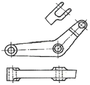
- 국부 투상도
- 부분 투상도
- 회전 투상도
- 부분 확대도
(정답률: 86%)
44. 그림은 어느 기어를 도시한 것인가?
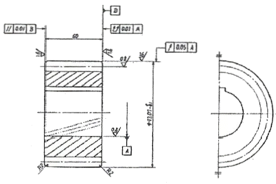
- 스퍼 기어
- 헬리컬 기어
- 직선베벨 기어
- 윔 기어
(정답률: 65%)
45. 기하공차의 도시 방법에서 위치도를 나타내는 것은?
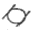
- ○
- ◎
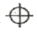
(정답률: 82%)
46. 다음 도면에서 A의 길이는 얼마인가?
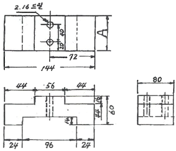
- 60
- 80
- 72
- 96
(정답률: 74%)
47. 그림과 같은 표면의 결 표시기호에서 M이 뜻하는 것은?
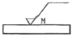
- 가공으로 생긴 선이 투상면에 직각 또는 평행
- 가공으로 생긴 선이 거의 동심원
- 가공으로 생긴 선이 두 방향으로 교차
- 가공으로 생긴 선이 여러 방향으로 교차 또는 무 방향
(정답률: 75%)
48. 다음 ()안에 적절한 것은?
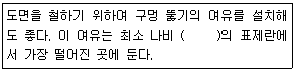
- 5mm
- 10mm
- 15mm
- 20mm
(정답률: 82%)
49. 물체의 보이지 않는 부분의 모양을 표시하는 선은?
- 외형선
- 숨은선
- 중심선
- 파단선
(정답률: 78%)
50. 볼 베어링의 도시 기호에서 복렬 자동 조심 볼 베어링에 해당하는 것은?
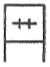
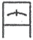
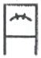
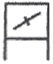
(정답률: 77%)
51. 선반 외경용 툴 홀더 규격에서 밑줄 친 25개가 나타내는 의미는 무엇인가?
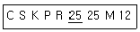
- 생크의 높이
- 절삭날 깊이
- 바이트의 길이
- 바이트의 폭
(정답률: 80%)
52. CNC 와이어 컷 방전가공에서 절연액(가공액)으로 물을 사용할 때의 장점이 아닌 것은?
- 취급이 용이하고 화재의 위험이 없다.
- 공작물과 와이어 전극을 빨리 냉각시킨다.
- 가공물의 표면상태가 양호하고 광택이 난다.
- 가공시 발생하는 불순물 제거가 양호하다.
(정답률: 71%)
53. 머시닝센터의 가공 작업시 주의할 사항으로 올바른 것은?
- 측정은 기계를 가동 중 직접 행한다.
- 주축의 회전은 최대 부하 상태로 지령해야 한다.
- 절삭유로 기름을 사용할 때는 필히 장갑을 끼고 가공한다.
- 칩의 제거는 기계가 정지한 후에 한다.
(정답률: 58%)
54. 기계의 테이블에 직접 검출기를 설치, 위치를 검출하여 피드백 시키는 서보기구 방식은?
- 폐쇄회로 방식
- 반개회로 방식
- 개방회로 방식
- 반폐쇄회로 방식
(정답률: 27%)
55. 다음 그림과 같이 ①에서 ②로 가공하고자 할 때 잘못된 프로그램은?
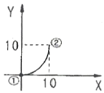
- G17 G90 G03 X10. Y10. R10. F200 ;
- G17 G91 G03 X10. Y10. R10. F200 ;
- G17 G91 G03 X10. Y10. I10. F200 ;
- G17 G91 G03 X10. Y10. J10. F200 ;
(정답률: 50%)
56. 밀링커터의 바깥지름이 100mm, 날수가 12개인 초경합금커터로 길이 250mm의 연강을 절삭하려고 한다. 날 1개마다 이송을 0.2mm로 하면 1회 절삭시간은 약 몇 분인가? (단, 절삭속도는 25m/min으로 한다.)
- 2
- 1.3
- 1.8
- 0.9
(정답률: 27%)
57. 범용 공작기계에서 사람이 손으로 핸들을 돌리는 기능은 CNC 공작기계에서는 어느 부분에 해당하는가?
- 컨트롤러
- 볼 스크루
- 리졸버
- 서보기구
(정답률: 58%)
58. 다음 CNC선반 프로그램에서 []안에 적합한 것을 순서대로 나열한 것은?
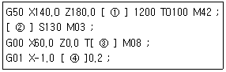
- S, G97, 0101, E
- S, G97, 0101, G
- F, G97,0100, S
- S, G96, 0101, F
(정답률: 60%)
59. 머시닝센터 프로그램에서 (+)방향 공구길이 보정을 나타내는 G-코드는?
- G49
- G44
- G43
- G45
(정답률: 44%)
60. CNC 선반에서 나사가공을 할 때 주축의 회전수가 변하면 올바른 나사를 가공할 수 없다. 이 때 주축 회전수를 일정하게 제어하기 위해 사용하는 G-코드로 알맞은 것은?
- G94
- G96
- G97
- G98
(정답률: 39%)